4.1. Введение
Имеется потенциальная возможность возникновения конфликта в многозадачной системе, если одна задача начинает получать доступ к ресурсу, но не завершила этот доступ до выхода из состояния Running. Если задача оставила ресурс в незавершенном состоянии, то доступ к тому же самому ресурсу со стороны другой задачи или прерывания может привести к порче данных или другой аналогичной ошибке.
Вот несколько примеров:
1. Доступ к периферийным устройствам
Рассмотрим следующий сценарий, когда две задачи пытаются записать данные в LCD (жидкокристаллический дисплей):
Теперь LCD будет отображать испорченную строку “Hello wAbort, Retry, Fail?orld”.
2. Операции Read, Modify, Write (чтение, модификация, запись)
Листинг 57 показывает строки кода C и соответствующие им операторы ассемблера (архитектура ARM7). Можно видеть, что значение PORTA сначала прочитано из памяти в регистр, модифицировано в регистре, и затем записано обратно в память. Такая стандартная последовательность действий называется операцией Read, Modify, Write.
/* Скомпилированный код C. */
155: PORTA |= 0x01;
/* Полученный в результате компиляции код ассемблера. */
0x00000264 481C LDR R0,[PC,#0x0070]; Получение адреса PORTA
0x00000266 6801 LDR R1,[R0,#0x00] ; Чтение значения PORTA в регистр R1
0x00000268 2201 MOV R2,#0x01 ; Помещение абсолютной константы 1 в регистр R2
0x0000026A 4311 ORR R1,R2 ; Операция OR R1 (PORTA) со значением R2 (константа 1)
0x0000026C 6001 STR R1,[R0,#0x00] ; Сохранение нового значения обратно в PORTA
Эта последовательность действий является 'не атомарной', поскольку занимает больше одной инструкции до полного завершения, и может быть прервана посередине. Рассмотрим следующий сценарий, когда две задачи пытаются обновить память, привязанную к регистру под именем PORTA:
В результате задача A обновляет и записывает обратно устаревшее, недостоверное значение PORTA. Задача B успела изменить PORTA между получением копии PORTA задачей A и моментом времени, когда задача A изменяет эту свою копию и записывает её обратно в PORTA. В результате задача A перезаписывает модификацию PORTA, которую сделала задача B, и значение PORTA оказывается испорченным.
Этот пример использует регистр периферии, но тот же самый принцип может быть применен для операций Read, Modify, Write над глобальными переменными приложения.
3. Неатомарный доступ к переменным
Обновление несколько полей в структуре или обновление переменной с размером больше, чем натуральный размер слова архитектуры микроконтроллера (например, обновление 32-битной переменной на 16-битном процессоре) - это все примеры неатомарных операций. Если эта операция будет прервана, то в результате получится потеря или порча данных.
4. Реентерабельность (reentrant) функции
Функция является реентерабельной, если её можно безопасно вызвать из более чем одной задачи, или как из задач, так и из прерываний одновременно.
Каждая задача имеет свой собственный стек и свой собственный набор значений регистров. Если функция не делает попыток доступа к другим данным, кроме как к собственным, выделенным в стеке, или если она сохраняет используемые ею регистры, то она является реентерабельной. Листинг 58 показывает пример реентерабельной функции. Листинг 59 показывает пример функции, которая не является реентерабельной.
Листинг 58. Пример реентерабельной (reentrant) функции
/* В функцию передается параметр. Он будет передан либо через стек,
либо через регистр CPU. В любом случае каждая задача безопасно
получает для этой цели собственный стек или собственный набор
регистров. */
long lAddOneHundered( long lVar1 )
{
/* Эта переменная находится строго в области действия функции и
будет также выделена через стек или регистр, в зависимости от компилятора
и уровня оптимизации. Каждая задача или прерывание, которая будет
вызвать эту функцию, получит собственную копию переменной lVar2. */
long lVar2;
lVar2 = lVar1 + 100;
/* Чаще всего возвращаемое значение помещается в регистр CPU,
хотя оно также может быть помещено и в стек. */
return lVar2;
}
Листинг 59. Пример функции, которая не реентерабельна
/* В этом случае lVar1 является глобальной, так что каждая задача, которая
вызовет функцию, будет обращаться к одной и той же одной копии
переменной. */
long lVar1;
long lNonsenseFunction( void )
{
/* Эта переменная статическая (static), поэтому она не выделяется через
стек. Каждая задача, которая вызывает функцию, будет обращаться к одной
и той же одной копии переменной. */
static long lState = 0;
long lReturn;
switch( lState )
{
case 0 : lReturn = lVar1 + 10;
lState = 1;
break;
case 1 : lReturn = lVar1 + 20;
lState = 0;
break;
}
}
Взаимное исключение (mutual exclusion, mutex)
Доступ к ресурсу, который является либо общим для задач, либо общим для задач и прерываний, нуждается в управлении с использованием техники 'взаимного исключения' (mutual exclusion), чтобы обеспечить целостность данных в любой момент времени. Цель состоит в том, чтобы обеспечить только для одной задачи эксклюзивное использование общего ресурса, начиная с момента обращения к нему до момента окончания доступа (до возвращения ресурса в непротиворечивое состояние).
FreeRTOS предоставляет несколько возможностей, которые можно использовать для реализации взаимного исключения (mutual exclusion), однако самый лучший метод взаимного исключения (когда это возможно) - разработка приложения таким способом, что ресурсы не делаются общими, и к каждому ресурсу получает доступ только одна задача.
4.2. Критические секции и приостановка шедулера
Основные понятия по критической секции
В общем случае критическая секция - это регион кода, окруженный вызовами макросов taskENTER_CRITICAL() и taskEXIT_CRITICAL(), как показано в листинге 60. Критические секции также известны как критические регионы.
/* Обеспечим, чтобы доступ к регистру PORTA не был прерван, путем помещения
кода доступа к нему в критическую секцию. Здесь вход в критическую
секцию. */
taskENTER_CRITICAL();
/* Между вызовами макросов taskENTER_CRITICAL() и taskEXIT_CRITICAL()
невозможно переключение на другую задачу. Прерывания все еще могут
быть выполнены на тех портах FreeRTOS, у которых поддерживается
вложенность прерываний, но только для тех прерываний, у которых
приоритет установлен больше назначенного значения константы
configMAX_SYSCALL_INTERRUPT_PRIORITY – и таким прерываниям не
разрешено вызывать функции API FreeRTOS. */
PORTA |= 0x01;
/* Мы закончили доступ к PORTA, и теперь можно покинуть критическую
секцию. */
taskEXIT_CRITICAL();
Проекты примеров, которые сопровождают эту книгу, используют функцию под названием vPrintString(), чтобы вывести строки на стандартный вывод - такой как окно терминала для выполняемых приложений Open Watcom DOS. Функция vPrintString() вызывается из многих различных задач, так что в теории её реализация должна использовать защиту доступа к стандартному выводу с использованием критической секции, как показано в листинге 61.
void vPrintString( const portCHAR *pcString )
{
/* Запись строки в stdout, с использованием критической секции как
грубого метода взаимного исключения. */
taskENTER_CRITICAL();
{
printf( "%s", pcString );
fflush( stdout );
}
taskEXIT_CRITICAL();
/* Разрешаем нажатием любой кнопки остановить приложение. Обычно
приложение использует для этого специальную комбинацию клавиш (типа
Alt+X), что также должно защитить доступ к клавиатурному вводу. */
if( kbhit() )
{
vTaskEndScheduler();
}
}
Критические секции, реализованные таким способом, являются очень грубым методом обеспечения взаимного исключения. Они работают просто путем запрета прерываний либо полностью, либо до уровня приоритета прерываний, установленного константой configMAX_SYSCALL_INTERRUPT_PRIORITY - в зависимости от используемого порта FreeRTOS. Вытесняющее переключение контекста может произойти только изнутри прерывания, так что пока прерывания запрещены, задача вызвавшая taskENTER_CRITICAL() гарантированно останется в состоянии Running до выхода из критической секции.
Критические секции должны быть удержаны как можно более короткими, потому что иначе они повлияют на время ответа на прерывание. Каждый вызов taskENTER_CRITICAL() должен быть полностью парным с вызовом taskEXIT_CRITICAL(). По этой причине стандартный вывод не должен быть защищен с использованием критической секции (как показано в листинге 61), потому что запись в терминал может быть относительно долгой операцией. Также эмулятор DOS и поддержка вывода терминала Open Watcom не совместимы с этой формой взаимного исключения, так как вызовы библиотеки оставляют прерывания разрешенными. Примеры в этой части рассматривают альтернативные решения этой проблемы.
Критические секции безопасны для взаимного вкладывания, потому что ядро подсчитывает глубину вложения. Выход из критической секции произойдет только тогда, когда глубина вложения вернется к нулю - только когда один вызов taskEXIT_CRITICAL() выполняется с предшествующим ему вызовом taskENTER_CRITICAL().
Приостановка (или, иначе говоря, блокировка) шедулера
Критические секции могут быть также созданы приостановкой шедулера. Приостановка шедулера иногда также известна как 'блокировка' шедулера.
Обычно критические секции защищают область кода от доступа со стороны других задач и прерываний. Критическая секция, реализованная путем приостановки шедулера, защищает область кода только от доступа других задач, прерывания при этом останутся разрешенными.
Критическая секция, которая слишком длинная для реализации путем запрета прерываний, может вместо этого быть реализована путем приостановки шедулера, однако возобновление (отмена приостановки) шедулера может быть потенциально относительно долгой операцией, так что для каждого случая нужно тщательно проанализировать, какой метод лучше использовать.
API функция vTaskSuspendAll()
portBASE_TYPE xTaskResumeAll( void );
Шедулер прекращает приостановку (возобновляет работу) после вызова xTaskResumeAll().
|
Возвращаемое значение |
Описание |
|
Возвращаемое значение |
Переключения контекста, которые запрашивались во время приостановки шедулера, были удержаны в ожидании, и будут выполнены, как только шедулер возобновит работу. Ожидающий переключения контекст был выполнен до возврата xTaskResumeAll(), если функция вернула pdTRUE. Во всех остальных случаях xTaskResumeAll() вернет pdFALSE. |
Можно безопасно делать вложенные друг в друга вызовы vTaskSuspendAll() и xTaskResumeAll(), потому что ядро подсчитывает глубину вложений. Шедулер возобновит работу только тогда, когда счетчик глубины вложений вернется к нулю - гарантия того, что каждый вызов xTaskResumeAll() был обязательно после вызова vTaskSuspendAll().
Листинг 64 показывает реальную реализацию vPrintString(), которая приостанавливает шедулер для защиты доступа к выводу на терминал.
void vPrintString( const portCHAR *pcString )
{
/* Запись строки в stdout, с приостановкой шедулера
в качестве метода взаимного исключения. */
vTaskSuspendScheduler();
{
printf( "%s", pcString );
fflush( stdout );
}
xTaskResumeScheduler();
/* Разрешаем нажатием любой кнопки остановить приложение. Обычно
приложение использует для этого специальную комбинацию клавиш (типа
Alt+X), что также должно защитить доступ к клавиатурному вводу. */
if( kbhit() )
{
vTaskEndScheduler();
}
}
4.3. Мьютексы (и двоичные семафоры)
Мьютекс - это специальный тип двоичного семафора, который используется для управлением доступа к ресурсу, который используется совместно двумя или большим количеством задач. Слово MUTEX произошло от "MUTual EXclusion" (взаимное исключение).
Когда используется сценарий взаимного исключения, мьютекс можно концептуально рассмотреть как токен, связанный с совместно используемым ресурсом. Для законного доступа к ресурсу задача должна сначала 'взять' токен (стать держателем токена). Когда задача - держатель токена завершила работу с ресурсом, она должна 'отдать' токен обратно. Только когда токен свободен, другая задача может взять токен и тогда получить доступ к общему ресурсу. Задаче не разрешено обращаться к общему ресурсу, за исключением того случая, когда она держит токен. Этот механизм показан на рисунке 36.
Несмотря на то, что мьютексы и семафоры имеют много общих характеристик, сценарий на рисунке 36 (где мьютексы используется для взаимного исключения) полностью отличается от сценария рисунка 30 (где двоичные семафоры используются для синхронизации). Главное отличие - в том, что происходит с семафором после того, как он был получен:
· Семафор, который используется для взаимного исключения, должен быть всегда возвращен.
· Семафор, который используется для синхронизации нормально отбрасывается и не возвращается.
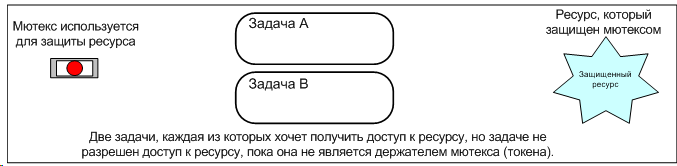
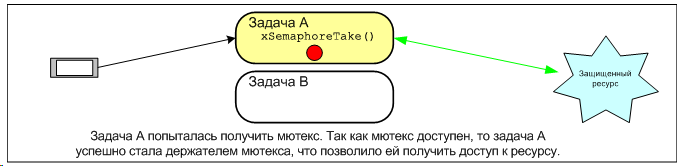
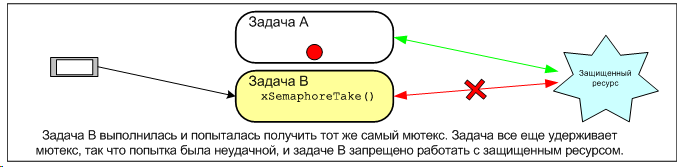
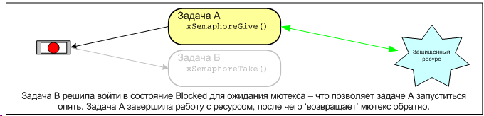
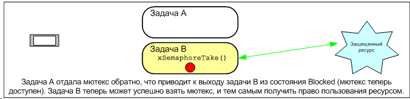
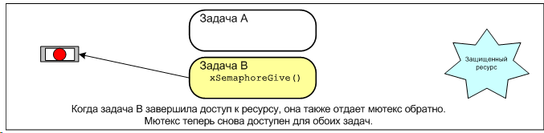
Рис. 36. Взаимное исключение, реализованное с использованием мьютекса
Механизм работает только по инициативе разработчика приложения. Нет никаких причин, почему бы задаче не получить доступ к ресурсу в любой момент, однако каждая задача "подчиняется" правилу доступа, что она обязательно должна сначала стать держателем мьютекса.
API функция xSemaphoreCreateMutex()
Мьютекс является типом семафора. Хендлы к различным типам семафоров FreeRTOS сохраняются в переменной типа xSemaphoreHandle.
Перед тем, как мьютекс может быть реально использован, он сначала должен быть создан. Для создания семафора типа мьютекс используется API функция xSemaphoreCreateMutex().
xSemaphoreHandle xSemaphoreCreateMutex( void );
|
Возвращаемое значение |
Описание |
|
Возвращаемое значение |
Если возвращен NULL, то мьютекс не может быть создан из-за недостатка памяти в куче (heap), так как FreeRTOS должна взять оттуда память для структур данных мьютекса. Часть 5 предоставляет больше информации по управлению памятью. Ненулевое возвращенное значение показывает, что мьютекс был успешно создан. Возвращенное значение должно быть сохранено как хендл к созданному мьютексу (для последующего использования в вызовах API функций). |
Пример 15. Написание заново функции vPrintString() для использования семафора
Этот пример создает новую версию функции vPrintString() под именем prvNewPrintString(). В примере вызывается новая функция prvNewPrintString() из нескольких задач. Функция prvNewPrintString() функционально идентична vPrintString(), но использует мьютекс для управления доступом к стандартному выводу вместо обычной критической секции. Реализация prvNewPrintString() показана в листинге 66.
static void prvNewPrintString( const portCHAR *pcString )
{
/* Мьютекс, созданный до старта шедулера, уже существует в момент
первого запуска этой задачи.
Попытка взять мьютекс, с бесконечной блокировкой в ожидании доступности
мьютекса, если он пока недоступен. Выход из xSemaphoreTake() произойдет
только тогда, когда мьютекс успешно получен, так что нет необходимости
проверять результат возврата функции. Если используется любой другой
период задержки, то код должен проверить, что xSemaphoreTake() вернула
pdTRUE перед доступом к общему ресурсу (который в нашем случае
является стандартным выводом). */
xSemaphoreTake( xMutex, portMAX_DELAY );
{
/* Следующая строка будет только выполняться только тогда, когда
мьютекс был успешно получен. Стандартный вывод может быть
использован свободно, так как теперь в любой момент времени мьютекс
может иметь только одна задача. */
printf( "%s", pcString );
fflush( stdout );
/* Мьютекс ДОЛЖЕН быть возвращен обратно! */
}
xSemaphoreGive( xMutex );
/* Разрешаем нажатием любой кнопки остановить приложение. Обычно
приложение использует для этого специальную комбинацию клавиш (типа
Alt+X), что также должно защитить доступ к клавиатурному вводу.
Хотя реальное приложение вряд ли будет иметь несколько задач, которые
обрабатывают нажатия клавиш! */
if( kbhit() )
{
vTaskEndScheduler();
}
}
Функция prvNewPrintString() постоянно вызывается двумя экземплярами задачи под названием prvPrintTask(). Между вызовами используется случайное время задержки. Параметр задачи используется для передачи уникальной строки в каждый экземпляр задачи. Реализация prvPrintTask() показана в листинге 67.
static void prvPrintTask( void *pvParameters )
{
char *pcStringToPrint;
/* Созданы два экземпляра этой задачи, так что строка, которую задача
посылает функции prvNewPrintString(), передается, как обычно,
через параметр задачи. Здесь используется приведение параметра
к нужному типу. */
pcStringToPrint = ( char * ) pvParameters;
for( ;; )
{
/* Вывод на печать строки с использованием новой функции. */
prvNewPrintString( pcStringToPrint );
/* Ожидание в течение псевдослучайного времени. Имейте в виду, что
rand() необязательно бывает реентерабельной, но в нашем случае
это неважно, так как код не заботится о возвращаемой величине.
В других, более надежных приложениях нужно использовать
реентерабельную версию rand(), или вызовы rand() должны быть
защищены критической секцией. */
vTaskDelay( ( rand() & 0x1FF ) );
}
}
Как обычно, функция main() просто создает мьютекс, создает задачи, и запускает шедулер. Реализация показана в листинге 68.
Два экземпляра prvPrintTask() создаются с разными приоритетами, так чтобы задача с меньшим приоритетом могла быть вытеснена задачей с более высоким приоритетом. Мьютекс используется для того, чтобы обеспечить взаимоисключающий доступ каждой задачи к выводу на терминал, даже когда одна задача вытеснена другой - выводимые строки будут отображаться корректно и не будут испорчены. Частота вытеснений может быть повышена путем уменьшения максимального времени нахождения задач в состоянии Blocked, которое по умолчанию установлено в значение 0x1FF тиков.
int main( void )
{
/* Перед тем, как семафор может использоваться, он должен быть явным
образом создан. В этом примере создается семафор типа мьютекс. */
xMutex = xSemaphoreCreateMutex();
/* Задачи используют псевдослучайную задержку, инициализация генератора
случайного числа. */
srand( 567 );
/* Перед созданием задач проверим, что семафор создан успешно. */
if( xMutex != NULL )
{
/* Создание двух экземпляров задач, которые пишут в stdout. Строка,
которую они пишут, передается через параметр задачи. Задачи
создаются с разным приоритетом, чтобы могло произойти
вытеснение одной задачи другой задачей. */
xTaskCreate( prvPrintTask, "Print1", 1000,
"Task 1 ******************************************\r\n",
1, NULL );
xTaskCreate( prvPrintTask, "Print2", 1000,
"Task 2 ------------------------------------------\r\n",
2, NULL );
/* Запуск шедулера, после чего задачи запустятся на выполнение. */
vTaskStartScheduler();
}
/* Если все хорошо, то управление в main() никогда не дойдет до этой
точки, и теперь шедулер будет управлять задачами. Если main() довела
управление до этого места, то это может означать, что не хватает
памяти кучи (heap) для создания специальной задачи ожидания (idle
task). Часть 5 предоставляет больше информации по управлению
памятью. */
for( ;; );
}
Вывод, производимый примером 15, показан на рисунке 37. Возможная последовательность выполнения описана на рисунке 38.
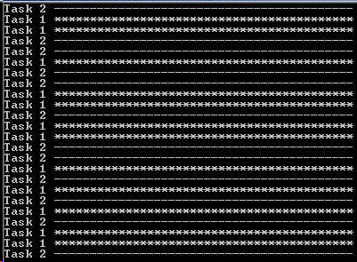
На рисунке 37 видно, что как и ожидалось, строки выводятся на терминал без искажений. Случайный порядок строк - результат случайного периода задержки, используемого задачами.
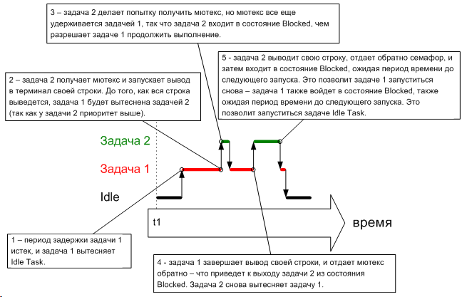
Рис. 38. Возможная последовательность выполнения для примера 15
Инверсия приоритета
Рисунок 38 демонстрирует одну потенциальную ловушку, в которую можно попасть, используя мьютекс для обеспечения взаимного исключения. Рассмотренная последовательность выполнения показывает, что задача 2 с более высоким приоритетом ждет низкоприоритетную задачу 1, чтобы получить контроль над мьютексом. Такой случай, когда выполнение высокоприоритетной задачи откладывается низкоприоритетной задачей, называется 'инверсией приоритета' (priority inversion). Это нежелательное поведение может быть еще более ухудшено, если запустится задача со средним приоритетом в то время, как высокоприоритетная задача ждет семафор - в результате получится, что высокоприоритетная задача ждет низкоприоритетную задачу, когда низкоприоритетная задача даже не имеет возможности запуститься! Такой наихудший сценарий показан на рисунке 39.
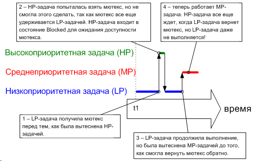
Рис. 39. Наихудший возможный сценарий инверсии приоритетов
Инверсия приоритета может быть очень серьезной проблемой, но в малых встраиваемых системах её часто можно избежать путем тщательного планирования доступа к ресурсам во время разработки системы.
Наследование приоритета
Мьютексы и двоичные семафоры FreeRTOS очень просты, и различаются друг от друга только тем, что мьютексы предоставляют базовый механизм 'наследования приоритета'. Наследование приоритета - схема, которая минимизирует негативный эффект от инверсии приоритета. Наследование приоритета не 'исправляет' инверсию приоритета, а просто значительно снижает её воздействие. Применение наследования приоритета делает математический анализ поведения системы более сложным, поэтому не рекомендуется использовать наследование приоритета, если этого можно как-то избежать.
Наследование приоритета работает через временное повышение приоритета держателя мьютекса до приоритета задачи с самым высоким приоритетом, которая пытается получить тот же самый мьютекс. Низкоприоритетная задача, которая удерживает мьютекс, 'наследует' приоритет задачи, которая ждет мьютекс. Это демонстрируется на рисунке 40. Приоритет держателя мьютекса автоматически сбрасывается обратно в свое исходное значение, когда держатель мьютекса возвращает мьютекс обратно.
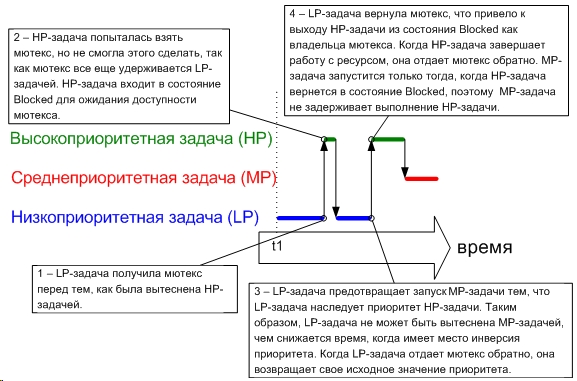
Рис. 40. Наследование приоритета минимизирует эффект от инверсии приоритета.
Поскольку, во-первых, необходимо избегать инверсии приоритета, и поскольку, во-вторых, FreeRTOS предназначена для микроконтроллеров с ограниченными ресурсами памяти, механизм наследования приоритетов реализован мьютексами только в базовой форме, которая подразумевает, что задача в каждый момент времени удерживает только один мьютекс.
Глухая блокировка, deadlock (или "мертвые объятия")
'Deadlock' - другая потенциальная ловушка в использовании мьютексов для взаимного исключения. Deadlock иногда известен под более драматическим именем 'смертельные объятия'.
Deadlock произойдет, когда две задачи не могут работать, поскольку они обе ждут ресурса, который удерживается третьей задачей. Представим себе следующий сценарий, где задача A и задача B обе хотят получить мьютекс X и мьютекс Y в следующем порядке действий:
1. Задача A выполняется и успешно получает мьютекс X.
2. Задача A вытесняется задачей B.
3. Задача B успешно получила мьютекс Y перед попыткой получить мьютекс X - однако мьютекс X удерживается задачей A, и поэтому недоступен для задачи B. Задача B решает войти в состояние Blocked для ожидания освобождения мьютекса X.
4. Задача A продолжает выполнение. Она пытается получить мьютекс Y - но мьютекс Y удерживается задачей B, и поэтому недоступен для задачи A. Задача A решает войти в состояние Blocked для ожидания освобождения мьютекса Y.
В конце этого сценария задача A ждет мьютекса, удерживаемого задачей B, а задача B ждет мьютекса, удерживаемого задачей A. Deadlock произошел, потому что ни одна из задач дальше не может выполняться.
Как и с инверсией приоритетов, наилучший метод избежать деадлока - рассмотреть такую возможность на этапе разработки приложения, и разработать систему так, чтобы такая ситуация в принципе не смогла бы возникнуть. На практике деадлок небольшая проблема для малых встраиваемых систем, поскольку их разработчики могут иметь хорошее понимание работы всего приложения в целом, и могут быстро идентифицировать и устранить проблему, где она возникает.
4.4. Задачи привратника (GATEKEEPER)
Задачи гейткипера предоставляют чистый метод реализации взаимного исключения без всякого беспокойства о инверсии приоритета или деадлоке.
Задача гейткипера - это задача, единолично владеющая ресурсом. Только задача гейткипера может напрямую получить доступ к ресурсу - любая другая задача, нуждающаяся в доступе к ресурсу, может это делать только косвенно, используя службы гейткипера.
Пример 16. Написание заново функции vPrintString() для использования задачи гейткипера
Пример 16 также предоставляет альтернативную реализацию vPrintString(), на этот раз используется задача гейткипера для получения доступа к стандартному выводу. Когда задача хочет записать сообщение в терминал, она не использует напрямую функцию печати, но вместо этого отправляет сообщение привратнику.
Гейткипер использует очередь FreeRTOS для организации последовательного доступа к терминалу. Внутренней реализации задачи не требуется взаимное исключение, так как только одна задача может обращаться к терминалу напрямую.
Задача гейткипера почти все свое время проводит в состоянии Blocked, ожидая появления сообщений на очереди. Когда сообщение поступило в очередь, гейткипер просто выводит его в stdout перед возвратом в состояние Blocked для ожидания следующего сообщения. Реализация задачи гейткипера показана в листинге 70.
Прерывания могут отправить данные в очередь, так что ISR могут безопасно использовать службы гейткипера для вывода сообщений в терминал. В этом примере используется функция хука тиков для вывода сообщения каждые 200 тиков.
Хук тиков (или callback) - функия, которая вызывается ядром во время каждого прерывания тика. Для использования функции хука тика нужно:
· Установить configUSE_TICK_HOOK в 1 в файле FreeRTOSConfig.h.
· Предоставить реализацию функции хука тика, используя точно такое имя и прототип функции, как показано в листинге 69.
Листинг 69. Имя и прототип для функции хука тиков (tick hook):
void vApplicationTickHook( void );
Функции хука тика исполняются в контексте прерывания тика, так что она должна быть как можно проще и короче, использовать только управляемое пространство стека, и не должна вызывать никакие функции API FreeRTOS, имя которых не оканчивается на 'FromISR()'.
Листинг 70. Задача привратника (gatekeeper):
static void prvStdioGatekeeperTask( void *pvParameters )
{
char *pcMessageToPrint;
/* Только этой задаче привратника разрешено записывать в окно
терминала. Все другие задачи, которым надо вывести что-то на
терминал, не получают прямой доступ к терминалу, но вместо
этого отправляют строку привратнику. Так как только эта задача
пишет в stdout, не нужно заботиться о взаимном исключении или
сериализации внутри этой задачи. */
for( ;; )
{
/* Ожидание поступления сообщения. Указывается бесконечное
время блокировки, так что не надо проверять значение
возврата - выход из xQueueReceive() произойдет только
тогда, когда будет успешно получено сообщение. */
xQueueReceive( xPrintQueue, &pcMessageToPrint, portMAX_DELAY );
/* Вывод принятой строки. */
printf( "%s", pcMessageToPrint );
fflush( stdout );
/* Теперь просто происходит возврат к ожиданию следующего
сообщения. */
}
}
Задача, которая выводит сообщение, сделана так же, как в примере 15, за исключением того, что на этот раз строка отправляется в очередь гейткипера, а не выводится напрямую. Реализация задачи показана в листинге 71. Как и в прошлый раз, создаются два разных экземпляра одной и той же задачи, каждый из экземпляров печатает свою уникальную строку, переданную через параметр задачи.
static void prvPrintTask( void *pvParameters )
{
int iIndexToString;
/* Создается два экземпляра этой задачи. Параметр задачи
используется для передачи в задачу индекса строки в массиве.
Здесь делается приведение к нужному типу. */
iIndexToString = ( int ) pvParameters;
for( ;; )
{
/* Вывод на печать строки - не напрямую, а вместо этого
передача указателя на строку привратнику через очередь.
Очередь создается перед запуском шедулера, так что очередь
уже существует перед первым запуском этой задачи. Время
блокировки не указано, так как в очереди всегда должно
быть свободное место. */
xQueueSendToBack( xPrintQueue, &( pcStringsToPrint[ iIndexToString ] ), 0 );
/* Ожидание в течение псевдослучайного времени. Имейте в виду,
что rand() необязательно бывает реентерабельной, но в нашем
случае это неважно, так как код не заботится о возвращаемой
величине. В других, более надежных приложениях нужно
использовать реентерабельную версию rand(), или вызовы
rand() должны быть защищены критической секцией. */
vTaskDelay( ( rand() & 0x1FF ) );
}
}
Функция хука тиков просто считает количество её вызовов, отправляя свое сообщение задаче гейткипера, как только счетчик достигнет 200. Только в целях демонстрации хук тика пишет в начало очереди, и задача prvPrintTask пишет в конец очереди. Реализация хука тиков показана в листинге 72.
void vApplicationTickHook( void )
{
static int iCount = 0;
portBASE_TYPE xHigherPriorityTaskWoken = pdFALSE;
/* Вывод на печать сообщения каждые 200 тиков. Сообщение не выводится
напрямую, оно отправляется задаче гейткипера. */
iCount++;
if( iCount >= 200 )
{
/* В этом случае последний параметр (xHigherPriorityTaskWoken) реально
не используется, однако все равно должен быть предоставлен. */
xQueueSendToFrontFromISR( xPrintQueue,
&( pcStringsToPrint[ 2 ] ),
&xHigherPriorityTaskWoken );
/* Сброс счетчика, чтобы печать сообщения происходила каждые 200 тиков
времени. */
iCount = 0;
}
}
Как обычно, функция main() просто создает очередь и задачи, необходимые для работы примера, и затем запускает шедулер. Реализация main() показана в листинге 73.
/* Определение строк, которые будут выводить на печать задачи
и прерывание через гейткипера. */
static char *pcStringsToPrint[] =
{
"Task 1 ****************************************************\r\n",
"Task 2 ----------------------------------------------------\r\n",
"Message printed from the tick hook interrupt ##############\r\n"
};
/*-----------------------------------------------------------*/
/* Декларирование переменной типа xQueueHandle. Она используется
для отправки сообщений из задач печати и прерывания тика
в задачу гейткипера. */
xQueueHandle xPrintQueue;
/*-----------------------------------------------------------*/
int main( void )
{
/* Перед использованием очереди она должна быть явно создана.
Очередь создается для удержания в себе максимум 5
указателей на строку. */
xPrintQueue = xQueueCreate( 5, sizeof( char * ) );
/* Задачи используют псевдослучайную задержку, инициализируем
генератора случайных чисел. */
srand( 567 );
/* Проверка: успешно ли создана очередь. */
if( xPrintQueue != NULL )
{
/* Создание двух экземпляров задач, которые отправляют сообщения
гейткиперу. Для передачи индекса печатаемой строки используется
параметр задачи (4-й параметр xTaskCreate()). Задачи создаются
с разным приоритетом, так что случайным образом низкоприоритетная
задача будет вытесняться высокоприоритетной задачей. */
xTaskCreate( prvPrintTask, "Print1", 1000, ( void * ) 0, 1, NULL );
xTaskCreate( prvPrintTask, "Print2", 1000, ( void * ) 1, 2, NULL );
/* Создание задачи гейткипера. Только этой задаче разрешен прямой
доступ к стандартному выводу. */
xTaskCreate( prvStdioGatekeeperTask, "Gatekeeper", 1000, NULL, 0, NULL );
/* Запуск шедулера, так что созданные задачи могут запуститься. */
vTaskStartScheduler();
}
/* Если все хорошо, то управление в main() никогда не дойдет до
этой точки, и теперь шедулер будет управлять задачами. Если
main() довела управление до этого места, то это может
означать, что не хватает памяти кучи (heap) для создания
специальной задачи ожидания (idle task). Часть 5 предоставляет
больше информации по управлению памятью. */
for( ;; );
}
Вывод, производимый примером 16, показан на рисунке 41. Как можно видеть, строки, приходящие из задач, и строки, приходящие из прерывания, все выводятся корректно, без порчи своего содержимого.
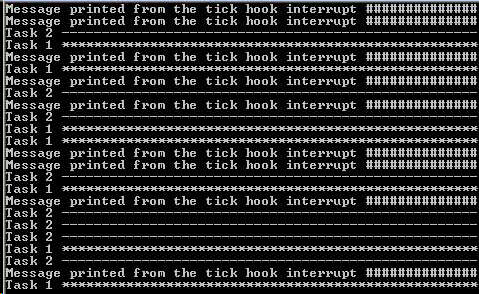
Задача привратника получила приоритет меньше, чем приоритеты печатающих задач - так что сообщения, которые отправлены гейткиперу, остаются в очереди, пока обе задачи печати не были в состоянии Blocked. В некоторых ситуациях может потребоваться назначить привратнику более высокий приоритет, чтобы сообщения были обработаны быстрее - но сделать так означает, что привратник будет задерживать выполнение менее приоритетных задач, пока он не завершит доступ к защищенному ресурсу.